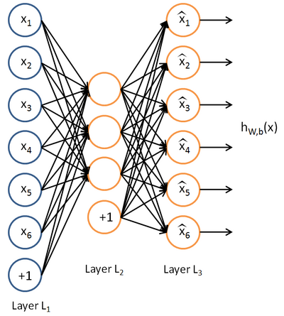
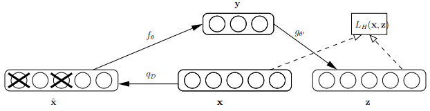

有监督的神经网络需要我们的数据是有标注（Labeled）的，然而神经网络并不止限于处理有标注的数据，同时还能处理无标注的数据，形如：${x^{(1)},x^{(2)},x^{(3)},…} 其中 x^{(i)}\in{\mathbb{R}^n}$
其中的一种算法叫做AutoEncoder——自编码网络。
自编码网络模型
自编码网络的结构如下图所示：

网络中最左侧蓝色的节点是输入层，最右侧黄色的一列神经元是输出层。输出层的神经元数量完全等于输入层神经元的数量。 隐藏层的神经元数量少于输出层。
自编码网络的作用是，将输入样本压缩到隐藏层，再在输出端重建样本。也就是说，自编码网络输出层与输入层存在如下关系：$\hat{x_i} \approx x_i $
- 注意：由于神经元的输出只在0和1之间，因此输入需要进行均值归一化
自编码网络可以看做将数据进行压缩（由原来的“n-维”压缩成“m维”（m=隐藏层神经元数目）），然后再在需要的时候用损失尽量小的方式将数据恢复出来。
这里有两层意思:
第一，自编码网络是要将经过压缩的数据还原，即将我们将学习一组 $h_{W,b} \approx x$ 这是算法要学习的参数。
第二，还原数据应该使得损失尽量小，也就规定了我们的目标函数：$J(W,b) = \frac{1}{m} \sum_{i=1}^m{(\hat{x} - x)^2} $
数据压缩原理
压缩：限制隐藏层神经元数量
限制隐藏层的神经元数量，就可以得到压缩的效果。例如：输入x是10*10图片的像素灰度值，即x是100维向量。输入层大小n=100。我们令隐藏层大小 s_2=50 ,那么隐藏层的输出a2是一个50维向量，网络的输出层必须使用这个50维向量来重建100维的输入。即实现了数据压缩。
压缩原理
数据压缩依靠的是数据本身是有冗余信息的。当输入是完全随机，相互独立同分布的时候，网络将很难习得一个有效的压缩模型，然而现实中的数据（自然图像、语言、声音）总是存在不同程度的冗余性。自编码网络通过学习发现并去掉了这些冗余信息。实际上，自编码网络学习出的低维数据表示十分类似于PCA（主成分分析）学习出的主成分。压缩：限制隐藏层的稀疏性
另一种方式是限制隐藏层的稀疏性。首先定义稀疏性：
_稀疏性—_ 神经元总是使用一个激活函数，通常使用Sigmoid或者tanh函数，它们在输入很大的时候，趋于正无穷输出接近1的数，称该神经元为“激活状态”；在输入很小，趋于负无穷的时候分别输出0和-1，称该神经元为“非激活状态”。稀疏性要求隐藏层中的激活神经元是“稀疏”的——即大部分神经元处于非激活状态。
在神经网络中，常用$ a_j^{(2)} $表示第2层第j个神经元的输出,为表示输出和某个输入相关，记为$a_j^{(2)}(x^{(i)})$
令
$$ \hat{\rho}_j = \frac{1}{m}\sum_{i=1}^m[a_j^{(2)}(x^{(i)})] \quad $$
为隐藏层第j个单元对所有输入样本的输出的平均值，那么根据稀疏性限制可以限制：
$ \hat{\rho} = \rho$ 此处 $\rho$ 为稀疏参数,通常用一个接近于0的常数代替(例如$ \rho=0.05$)
为了保证$\rho_j$不偏离$\rho$ ，需要设置惩罚函数。
$J(W,b) = \frac{1}{m} \sum_{i=1}^m{(\hat{x} - x)^2} + PenalTerm$
$PenalTerm = \sum_{j=1}^{s_2}\rho·log\frac{\rho}{\rho_j}+(1-\rho)log\frac{1-\rho}{1-\rho_j}$
惩罚函数以相对熵(K-L Divergence)的形式给出。
注：K-L Divergence用于表示两个函数的差别,其定义为
$ KL(f(x)||g(x))= \sum_{x\in X}f(x)\cdot log \frac{f(x)}{g(x)}$
相对熵的性质：ρ与ρj相等时为0，随着偏差增大，相对熵增大，其图像如下图：

权重
- 在传统的AutoEncoder中我们知道，输入层到隐层有一个权重W1和bias b1，隐藏到输出层也有一个权重W2和截距项b2，此时我们也知道W1和W2的转置的型是同样大小的。但是在传统的AutoEncoder中我们对于W1和W2是单独训练的。
- 在tied weight中也就是W1和W2是tied的，此时让${W_2} = W_1^T$。因为如果初始化的时候让W2的转置等于W1，那么经过一次梯度下降由于W2上的grad和W1上的不一样，所以梯度下降一次之后，他们就不一样了。所以在实际算法中${W_2} = W_1^T$是做不到的(有多重解决方法)，但是不影响算法想过。
Sparse AutoEncoder
Denosing AutoEncoder
首先来看看Bengio论文中关于dAE的示意图，如下：

由上图可知，样本x按照qD分布加入随机噪声后变为 ,按照文章的意思，这里并不是加入高斯噪声，而是以一定概率将输入层某些节点的值清为0，这点与dropout很类似，只不过dropout作用在隐含层。此时输入到可视层的数据变为$\tilde x$，隐含层输出为y，然后由y重构x的输出z，注意此时这里不是重构$\tilde x$，而是x。
Bengio对dAE的直观解释为：
- dAE有点类似人体的感官系统，比如人眼看物体时，如果物体某一小部分被遮住了，人依然能够将其识别出来。
- 多模态信息输入人体时（比如声音，图像等），少了其中某些模态的信息有时影响也不大。
- 普通的autoencoder的本质是学习一个相等函数，即输入和重构后的输出相等，这种相等函数的表示有个缺点就是当测试样本和训练样本不符合同一分布，即相差较大时，效果不好，明显，dAE在这方面的处理有所进步。
基于生成模型推导Denosing AutoEncoder
两条生成路径
$$
Y \to X \to \tilde X:p\left( {X,\tilde X,Y} \right) = p\left( Y \right)p\left( {X|Y} \right)p\left( {\tilde X|X} \right)
$$
$$
X \to \tilde X \to Y:q\left( {X,\tilde X,Y} \right) = q\left( X \right)q\left( {\tilde X|X} \right)q\left( {\tilde X|Y} \right)
$$
注意：$Y \to Z$ ，Z本质上是还原的X，也就是X
两条路径中都有${\tilde X}$,则两条路径得到的${\tilde X}$的分布应该是接近的（越接近，说明Z对X的还原程度越好）
两条路径中${\tilde X}$分布的接近程度使用交叉熵定义(两个分布越相似，交叉熵越小):
$$
H\left( {q\left( {\tilde X} \right)||p\left( {\tilde X} \right)} \right) = {E_{q\left( {\tilde X} \right)}}\left[ { - \log \left( {p\left( {\tilde X} \right)} \right)} \right] = H\left( {q\left( {\tilde X} \right)} \right) + {D_{KL}}\left( {q\left( {\tilde X} \right)||p\left( {\tilde X} \right)} \right)
$$
损失函数为：
$$
L = \mathop {\min }\limits_{\theta ‘} \left\{ {H\left( {q\left( {\tilde X} \right)||p\left( {\tilde X} \right)} \right)} \right\} = \mathop {\max }\limits_{\theta ‘} \left\{ { - H\left( {q\left( {\tilde X} \right)||p\left( {\tilde X} \right)} \right)} \right\}
$$
推导得最优解为(过程见：Extracting and composing robust features with denoising autoencode 4.2 )：
$$
\arg\min_{\theta, \theta’} E_{q(X,\bar X)}[L_H(X, g_{\theta’}(f_{\theta}(\bar X)))]
$$
Stacked AutoEncoder(SAE)
Stacked Denosing AutoEncoder(SDAE)
You provide noise to the input. It passes through the hidden layer. Output is generated and loss is calculated between the output and the original (clean) input. You continue until convergence when the loss is minimized. Then finally you pass the full data through this network and collect the data present in the deepest hidden layer. This is your new input.（相当于原始数据在新的维度上的表示）
You take this (collected) input and pass noise to it and follow the same procedure thereafter. Ultimately after you are done with the last layer, the data collected in this last hidden layer is now your new data.
根据文章 Collaborative Deep Learning for Recommender Systems (3.1节) 可以看出 SDAE 也是Sparse的AE